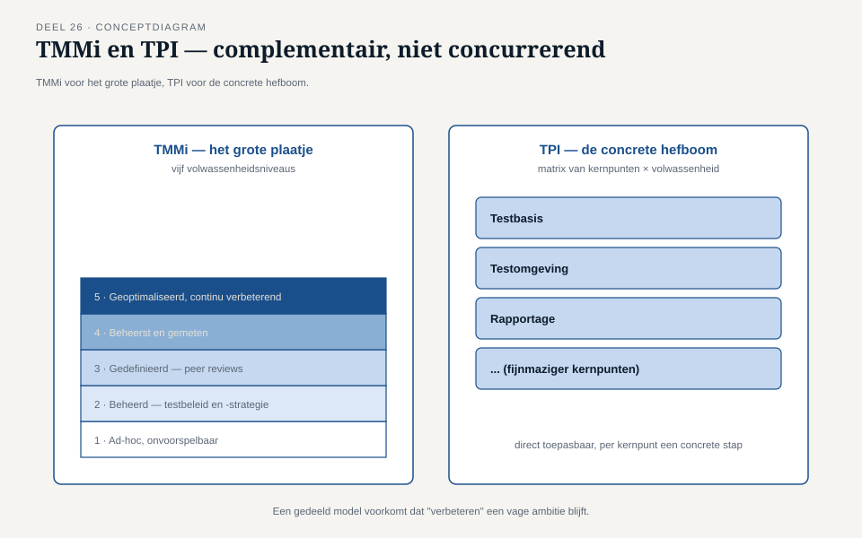

Deel 26 — Testprocesverbetering
Reader · Ductus-cursus Testen en Kwaliteitsborging · niveau 3 (expert) · deel 26 van 30
Leerdoelen
Na dit deel kun je:
- volwassenheidsmodellen (TMMi, TPI) toepassen om een testproces te positioneren;
- een assessment opzetten en uitvoeren zonder het tot een afvinkoefening te laten verworden;
- verbeteringen doorvoeren die daadwerkelijk gedrag veranderen, niet alleen documentatie;
- weerstand tegen procesverandering herkennen en er constructief mee omgaan;
- adoptie van een verbetering borgen zodat zij niet na een half jaar weer wegzakt.
Studielast: één dagdeel klassikaal, circa drie uur zelfstudie.
1. Het assessment dat niemand wilde
Na de eerste schaduwdraaisessie (deel 25) besloot het programmamanagement een formeel testprocesassessment te laten uitvoeren — deels op verzoek van Hakim Osei (deel 24), die twijfelde of de dossiervorming consistent genoeg was. De eerste reactie van de teams was defensief: een assessment voelde als een beoordeling van personen, niet van een proces. Iris moest, vóór het assessment zelf kon beginnen, eerst dat wantrouwen adresseren.
Kernzin — Een testprocesassessment dat als persoonlijke beoordeling wordt ervaren, levert verdedigend gedrag op in plaats van eerlijke input — en verdedigend gedrag is precies wat een assessment onbruikbaar maakt.
2. Volwassenheidsmodellen
2.1 TMMi
TMMi (Test Maturity Model integration) beschrijft testvolwassenheid in vijf niveaus, van ad-hoc en onvoorspelbaar (niveau 1) tot geoptimaliseerd en continu verbeterend (niveau 5), met specifieke procesgebieden per niveau (bijvoorbeeld testbeleid en -strategie op niveau 2, peer reviews op niveau 3).
2.2 TPI
TPI (Test Process Improvement) werkt met een matrix van kernpunten (bijvoorbeeld testbasis, testomgeving, rapportage — begrippen die door deze hele cursus lopen) tegen volwassenheidsniveaus, en geeft daarmee een fijnmaziger, direct toepasbaar beeld dan de bredere TMMi-niveaus.
Verifieer bij uitwerking en gebruik van dit materiaal de actuele status en versies van beide modellen — de testprocesverbeteringswereld ontwikkelt door, en specifieke niveaus of kernpunten kunnen zijn herzien.

2.3 Waarom een model, en niet alleen intuïtie
Een gedeeld model voorkomt dat "verbeteren" een vage ambitie blijft — het geeft een gemeenschappelijke taal om te zeggen waar een team staat en wat de eerstvolgende, haalbare stap is, vergelijkbaar met hoe de teststrategiematrix (niveau 2, deel 12) een gedeelde taal geeft voor risico in plaats van los invoelen.
3. Een assessment uitvoeren
3.1 Van beoordeling naar gezamenlijk onderzoek
Consistent met §1: een assessment werkt het best wanneer het wordt gepositioneerd als een gezamenlijk onderzoek naar wat werkt en wat niet, met het team als mede-eigenaar van de uitkomst, niet als onderwerp van onderzoek. Dit is dezelfde toon-discipline als bevindingen bespreekbaar maken (niveau 1, deel 8, §5.4), nu toegepast op het proces zelf in plaats van op een individueel testgeval.
3.2 Bewijs, geen indruk
Een assessment dat leunt op "hoe voelt het testproces" levert vage, moeilijk te toetsen uitkomsten op. Een assessment dat, net als het testwerk zelf (deel 23-24), vraagt om concreet bewijs — een voorbeeld van een recent testdossier, een concrete traceerbaarheidsketen — levert een uitkomst die net zo goed op de ladder van zekerheid (deel 23) te plaatsen is als elke andere bewering in deze cursus.
4. Verbeteren zonder ritueel
4.1 Het risico van het afvinkritueel
Een veelvoorkomende valkuil: een organisatie voert een verbetering door op papier (een nieuw sjabloon, een nieuwe checklist) zonder dat het onderliggende gedrag verandert. Dit is een organisatorische versie van T4 (niveau 1): het document bestaat, maar niemand gebruikt het echt.
4.2 Wat wél werkt
- Één concrete verbetering per keer, met een duidelijk, meetbaar teken van succes — vergelijkbaar met hoe niveau 1, deel 9 waarschuwde tegen te veel tegelijk nastreven zonder heldere indicator.
- De verbetering testen zoals je een systeem test: een kleine pilot, evalueren, bijstellen, pas dan breed uitrollen — dezelfde iteratieve discipline als de rest van de cursus.
- Eigenaarschap bij het team zelf, niet bij een externe kwaliteitsfunctie die het proces "oplegt" — whole-team-denken (niveau 2, deel 11) toegepast op procesverbetering.
5. Weerstand en adoptie
5.1 Waarom weerstand vaak terecht is
Weerstand tegen een procesverandering is niet per definitie onwil — vaak is zij een signaal dat de verandering extra werk toevoegt zonder zichtbaar voordeel voor wie het werk moet doen. Dezelfde discipline als bij elke andere bevinding (niveau 1, deel 8): neem het signaal serieus vóórdat je het als hindernis behandelt.
5.2 Adoptie borgen
Een verbetering die na een half jaar is weggezakt, was vaak nooit werkelijk geadopteerd — alleen tijdelijk gevolgd onder toezicht van het assessment zelf. Borging vraagt om de verbetering te verankeren in bestaand werk (bijvoorbeeld: de nieuwe dossiervorming wordt onderdeel van de bestaande sprintafronding, niet een apart, los proces ernaast) en om periodieke, lichte controle — niet een eenmalig assessment dat daarna wordt vergeten.
Kernzin — Een verbetering die alleen bestaat zolang iemand toekijkt, is geen verbetering van het proces — het is een tijdelijke verandering in gedrag onder observatie.
Kernbegrippen
TMMi · TPI · assessment als gezamenlijk onderzoek · bewijsgebaseerd assessment · verbeteren zonder ritueel · weerstand als signaal · adoptie en borging
Samenvatting in vijf zinnen
- Een assessment dat als persoonlijke beoordeling wordt ervaren, levert verdedigend gedrag op — precies wat het onbruikbaar maakt.
- TMMi geeft het grote plaatje van testvolwassenheid, TPI een fijnmaziger, direct toepasbaar kernpuntenoverzicht — complementair, niet concurrerend.
- Een assessment dat vraagt om concreet bewijs in plaats van een indruk, levert een uitkomst op die net zo goed op de ladder van zekerheid te plaatsen is als elke andere bewering in deze cursus.
- Een verbetering die alleen op papier bestaat zonder veranderd gedrag, is een organisatorische versie van T4 — het document bestaat, niemand gebruikt het.
- Weerstand is vaak een terecht signaal dat extra werk zonder zichtbaar voordeel wordt gevraagd, en adoptie vraagt om verankering in bestaand werk, niet een los, tijdelijk ritueel.